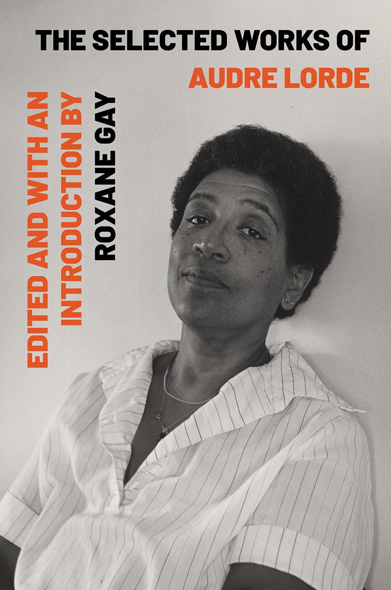
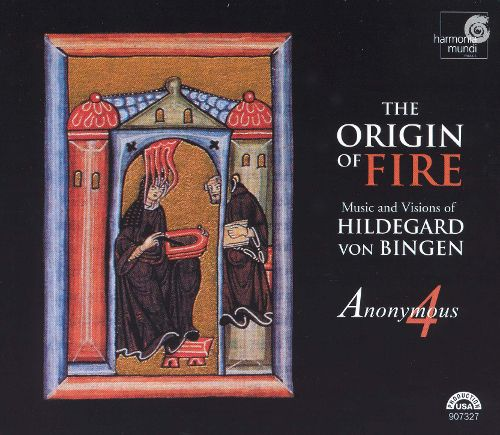

Did you Hear That...?
This is Women's History Month!
Welcome to Women's History Month at Arkham Public Library! Throughout March, we celebrate the remarkable contributions and achievements of women throughout history. Join us in exploring the stories of trailblazing women who have shaped our world in diverse fields such as politics, science, literature, art, and more. From groundbreaking leaders to unsung heroes, discover the rich tapestry of women's experiences and accomplishments. Explore our curated collections, engaging events, and insightful resources that honor and elevate the voices and experiences of women. Together, let's celebrate the past, present, and future of women's empowerment and progress.
Beryl Markham
Beryl Markham, a pioneering aviator and author, captured the world's imagination with her fearless spirit and remarkable achievements. Her groundbreaking transatlantic flight and memoir, "West with the Night," continue to inspire adventurers and writers alike.

Audre Lorde
Audre Lorde, a towering figure in literature and activism, fearlessly confronted issues of race, gender, and sexuality. Her poetry and essays continue to empower and resonate with audiences worldwide, advocating for social justice and self-expression.

Hildegard von Bingen
Hildegard of Bingen, also known as Saint Hildegard and the Sibyl of the Rhine, was a German Benedictine abbess and polymath active as a writer, composer, philosopher, mystic, visionary, and as a medical writer and practitioner during the High Middle Ages.
It's the equinox
In Celtic mythology, the spring equinox is associated with the festival of Ostara or Eostre, which celebrates the goddess of fertility and the coming of spring. However, it's also believed to be a time when the veil between worlds is thin, making it easier for spirits and otherworldly beings to interact with the living. Whether your want to keep the unnamed horrors at bay or invite them to tea - we've got you covered!

Consorting with spirits refers to engaging in spiritual practices that can vary widely across cultures and belief systems, from shamanic traditions to spiritualism. They may involve mediums, seances, rituals, or other methods of contacting spirits for guidance, healing, or divination purposes.

Playful and metaphorical exploration of one's inner demons or darker aspects of the self over a seemingly innocuous activity like tea and cakes. It hints at themes of introspection, confronting personal struggles, or finding comfort in unexpected places amidst the shadows of the psyche.

It is outside. It is waiting. It is smiling. Is your Great Value bottle of sage going to be enough? Be ready.
Welcome to the Arkham Public Library!
Secrets from the Stacks...
Hi There I'm Steve, your new Librarian! Welcome to our new website! Due to the unfortunate disappearance of the previous head librarian and the damaged caused by “the incident,” all original files have been lost or corrupted. Please be patient as we build up the new and improved site! Our new domain name was donated by the estate of Dorkus Goode after her passing at the venerable age of 107. If you were looking for the “Of Holly & Of Oak Bookstore” I’m afraid it is no longer in operation. I realize there has been some confusion in regards to our URL update. Due to a lapse in the renewal of our original .org domain name, it has subsequently been purchased and transformed into an online artist gallery. The timing of this transition, the opening day for online registration of “Arkham Seniors’ Tea, Crumpets, and Crochet,’ was unfortunate. In response to the many calls we continue to receive, we are no longer associated with the previous URL. We do, however, carry a several books on the art and legacy of Robert Mapplethorpe, though not currently in large print. Please be sure to update your bookmarks.
Library Secures Grant for Archiving Project!
We are thrilled to share some wonderful news with you all! Our library has been awarded a generous grant to support Arkham's ongoing archiving efforts. This initiative marks a significant milestone in our commitment to preserving and celebrating our community's rich cultural heritage. Click here to read more!
About the Grant:
The grant, generously provided by Exham Priory and Delapore Foundatoin, will enable us to embark on a comprehensive archiving project aimed at preserving and digitizing our extensive collection of historical documents, photographs, and artifacts. This funding will not only ensure the long-term preservation of these invaluable resources but also make them more accessible to our community members, researchers, and future generations.
Project Objectives:
- Digitization of archival materials to ensure their long-term preservation and accessibility.
- Creation of an online digital archive accessible to researchers, historians, educators, and the general public.
- Development of educational programs and exhibitions to engage the community with our rich cultural heritage.
Community Involvement:
We recognize the importance of community involvement in this endeavor and invite all interested individuals to participate in various aspects of the project. Whether you have personal stories, photographs, or documents that you would like to contribute to our archive, or if you're interested in volunteering your time and expertise, we welcome your involvement.
How You Can Support:
Your support is crucial to the success of this project. If you would like to contribute financially, volunteer your time, or share your expertise, please reach out to us at [Contact Information]. Together, we can ensure that our community's history is preserved and celebrated for generations to come.
Stay Updated:
We will keep you updated on the progress of the archiving project through our website, social media channels, and library newsletters. Be sure to follow us for the latest news and opportunities to get involved!
Events
The animus of the Library is the population of Arkham itself. The Library strives to honor the town’s rich history of artists, scholars and free thinkers by offering not only our extensive collection but also sponsoring events that highlights the varied talents and expertise of our residents.
Performance by Morgan
Local Son Morgan M perfoms songs from this new album "CottageCore"

Tales from the vault
Archivist Sue will give a talk on some of the highlights from the Ward family collection.